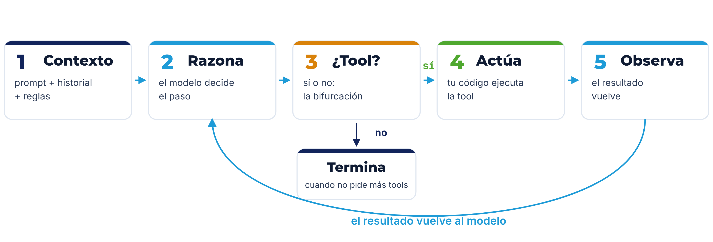
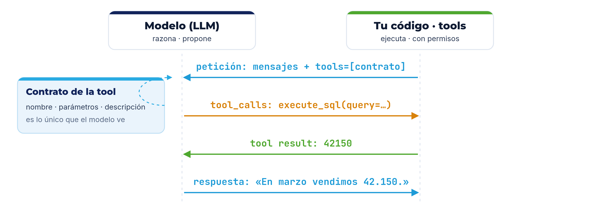
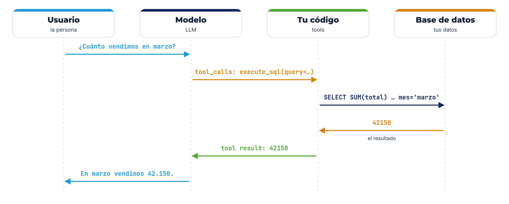
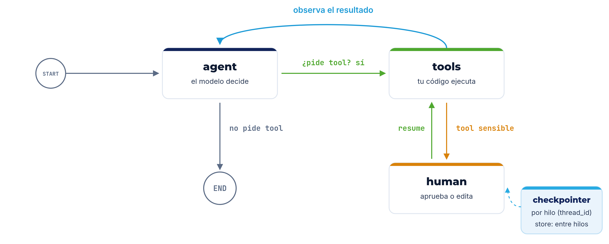
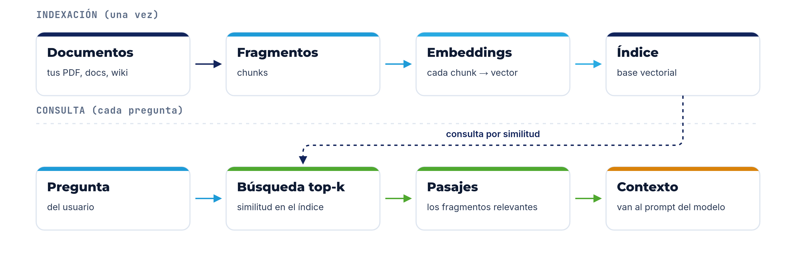
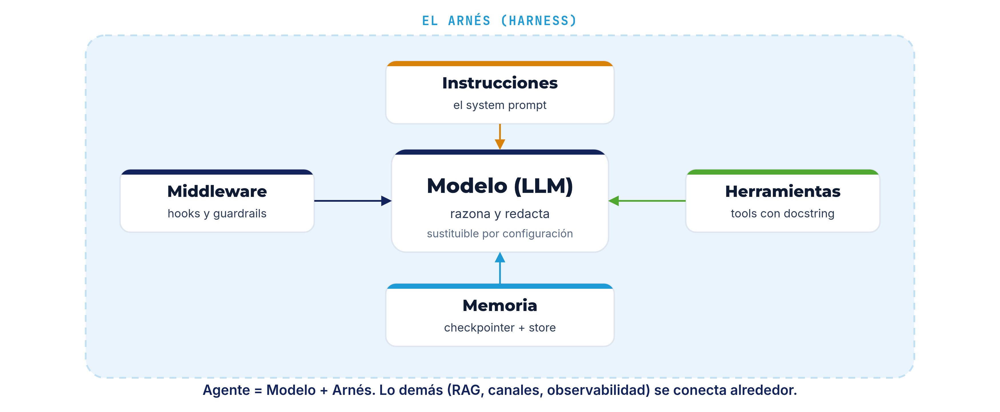

José Miguel Amaya — 15+ años construyendo software

- CTO y socio fundador de Xprende Tech; fundador de Piura AI y Python Piura.
- Construyo agentes conversacionales en producción: LangChain, LangGraph, RAG.
- Tres años construyendo agentes conversacionales.
Qué es, cómo funciona y cómo se construye
Qué es un agente
La diferencia con un LLM y con un workflow.
Cómo funciona
El bucle, las herramientas y la memoria.
Cómo empezar a construir
Un agente mínimo con LangChain.
Otros frameworks
Un mapa del ecosistema y cómo elegir.
Al terminar, vas a poder construir un agente y ubicar el resto del ecosistema.
Un LLM es una función de texto
No recuerda
Cada llamada es independiente. Nada persiste entre mensajes.
No decide
No elige pasos: solo produce el texto más probable.
No actúa
No puede enviar un correo ni consultar una base de datos.
Es como un genio brillante… pero encerrado, sin manos y sin memoria.
Encadenar: un prompt fijo que alimenta al modelo
Una cadena sirve para tareas repetibles: resumir, clasificar, extraer. El camino lo decides tú.
Pero el modelo no puede decir: "no sé, mejor busco en la base de datos".
Un agente decide el siguiente paso
Un agente es un modelo al que le das herramientas y un bucle: puede responder, o pedir una acción, y vuelve a pensar con el resultado.
Cadena
el camino lo escribes tú
Agente
el camino lo decide el modelo
Regla práctica: si el camino es predecible, quédate en workflow; si el modelo debe decidir, sube a agente. Empieza por lo más simple.
El bucle del agente (ReAct)
El patrón clásico: razonar y actuar en un ciclo. Hoy el modelo lo hace con tool calling nativo.

Es un ciclo, no una línea: el modelo decide el paso, la ejecución vive en tu código.
Todo agente tiene: cerebro, manos, memoria y sentidos
Cerebro
Modelo
razona y redacta. Intercambiable por configuración.
Manos
Herramientas
actúan en el mundo: APIs, base de datos, archivos.
Memoria
Estado
historial, hechos y checkpoints por conversación.
Sentidos
Contexto
lo que entra a la ventana en cada turno.
A eso lo llamamos el arnés (harness): todo lo que rodea al modelo —prompt, herramientas, middleware— para darle el contexto correcto en el momento correcto.
El modelo propone; tu código ejecuta.

Esa separación es lo que hace al agente seguro: el modelo propone, tú dispones.
Por dentro, todo es una lista de mensajes
las reglas del agente
lo que pide la persona
lo que dice el modelo (y sus peticiones de tools)
lo que devolvió la herramienta
El turno del agente es esa lista creciendo (append-only): mensaje a mensaje, tool a tool. Por eso el contexto se llena y se paga.
"¿Cuánto vendimos en marzo?"
El modelo no sabe el dato: pide la herramienta, tu código consulta, y solo entonces responde.

El modelo solo pidió la consulta; la ejecutó tu código, con tus permisos. Y si hace falta, encadena varias tools en el mismo turno.
Un bucle necesita un freno
¿Cuándo termina?
Cuando el modelo ya no pide herramientas. Ese es el criterio por defecto.
Límites
Máximo de iteraciones, tiempo y costo. Un bucle sin freno es un error de diseño.
Errores
Si una tool falla, el resultado vuelve como mensaje y el modelo puede corregir.
Predecible o no, el agente siempre debe poder parar.
Cómo recuerda un agente
Ventana
El contexto es finito y se paga. Lo que no entra, no lo sabe.
Historial
Se guarda la conversación y se reenvía en cada turno.
Corto plazo (el hilo)
Guarda el estado de la conversación: continuar la charla y reanudar tras una pausa.
Largo plazo (entre hilos)
Guarda hechos y preferencias que cruzan conversaciones.
Dos memorias: la del hilo (corto plazo) y la de entre hilos (largo plazo). Y cuando el contexto crece, se compacta (compaction).
Contexto, estado y memoria no son lo mismo
Contexto (ventana)
Lo que el modelo ve en un turno: system, historial y reglas. Es finito y se paga.
Estado
Los mensajes acumulados de la conversación: lo que llevamos en el hilo.
Memoria
Lo que sobrevive entre turnos: corto plazo (el hilo) y largo plazo (entre hilos).
Hilo (thread)
Una conversación con identidad propia, separada de las demás por su id.
El contexto es lo que el modelo ve ahora; el estado, lo que llevamos; la memoria, lo que guardamos.
El humano también está en el bucle
Con esto cierro la teoría: ya sabes cómo funciona un agente. Ahora, cómo se construye.
LangChain, LangGraph y LangSmith
LangChain
agentes con poco código
Un agente en una función: create_agent. Mil integraciones.
LangGraph
control explícito del flujo
Cuando lo necesitas: estado, ciclos, persistencia, interrupciones.
LangSmith
la observabilidad
Ver cada paso, cada tool y cada token.
Dato 2026: create_react_agent se deprecó; el estándar ahora es create_agent.
El agente mínimo
Rol y objetivo
Quién es y qué debe lograr.
Reglas y límites
Qué puede y qué no; cuándo pausar. No inventar: usar una tool o decirlo.
Formato y tono
Cómo responde: idioma, longitud y estilo.
create_agent arma el grafo por dentro; el system_prompt son las reglas del agente.
Una tool: decorador, tipos y docstring
Nombre
si es descriptivo, el modelo lo entiende
Tipos
los argumentos son un contrato validado
Docstring
el prompt que decide SI y COMO usarla
Lo que decide cuándo se usa una tool es su descripción, no su código. Pocas tools, nombres claros y errores útiles.
Modelo sustituible, middleware y salida
Modelo sustituible
Cambia de proveedor con una línea: init_chat_model unifica la interfaz, y las content blocks dan un formato común a texto, imágenes y más.
Middleware
Hooks antes y después del modelo, y de cada tool: contexto, guardrails (PII), aprobación, resiliencia y subagentes. No es un runtime aparte.
Salida
Estructurada (Pydantic, response_format → structured_response) para integrar; y streaming para ver la respuesta en vivo.
El modelo se cambia con una línea; el middleware extiende el bucle; la salida se adapta a tu sistema.
El modelo propone, tú dispones
Mínimo privilegio
Las tools corren con tus permisos y tus límites, nunca con los del modelo.
Validación
Valida los argumentos antes de ejecutar: el modelo puede equivocarse.
Prompt injection
El contenido externo (documentos, web) son datos, no órdenes.
Guardrails y humano
Middleware para datos sensibles (PII) y aprobación en acciones críticas.
El modelo decide; la ejecución y el permiso viven en tu código.
LangGraph: control cuando lo necesitas

create_agent cubre el 80%; baja a LangGraph cuando necesites este control. El detalle de cada pieza merece su propio espacio.
La recuperación: responder con tus datos

La recuperación conecta al agente con tus datos: fragmentas los documentos, los guardas como embeddings en un índice y traes los fragmentos más parecidos. Cómo buscar bien merece su propio espacio.
El agente completo, de una pieza

Ese es el agente: el modelo y su arnés (instrucciones, herramientas, middleware y memoria). Lo demás —RAG, canales, observabilidad— se conecta alrededor.
El agente no vive solo
Ya tienes el núcleo: un modelo que decide, con herramientas, memoria y un lazo humano. A su alrededor hay cuatro piezas más; hoy solo las nombramos.
Canales
Por dónde entra y sale el mensaje: WhatsApp, Telegram, web. Cada canal solo traduce.
Núcleo
La pieza que recibe, junta mensajes seguidos, guarda y arma el contexto antes de pensar.
Observabilidad
Ver cada turno por dentro: qué nodo corrió, qué herramienta se llamó, cuántos tokens.
Evaluación
Medir si el agente acierta: ¿eligió bien la herramienta?, ¿la respuesta salió de los datos?
Cuatro nombres para reconocerlos; cada uno merece su propio espacio.
MCP y A2A no son frameworks
Un framework construye y orquesta tu agente. Un protocolo es un contrato para conectarlo con el exterior. No compiten: se combinan.
MCP
Model Context Protocol
Cómo un agente se conecta a herramientas y datos. El enchufe universal: describes la tool una vez y cualquier agente la usa.
A2A
Agent-to-Agent
Cómo un agente habla con otro agente. Un idioma y una tarjeta de presentación comunes entre agentes.
Framework = cómo construyes tu agente. Protocolo = cómo se conecta con lo demás.
Existen más frameworks: elige por filosofía
Ya viste LangChain y LangGraph. El resto se elige por el problema, no por la moda.
Roles y equipos
CrewAI
Datos y RAG
LlamaIndex
Tipado y validación
Pydantic AI
Conversación
AutoGen · Microsoft Agent Framework
Tu nube
ADK · Strands · OpenAI SDK
Mínimo y TypeScript
smolagents · Mastra · Vercel
Y a veces la respuesta es ningún framework: el SDK del proveedor y código propio.
Cinco ideas
Gracias.
Ya tienes el mapa para construir tu primer agente.
Gracias a GDG Piura por la invitación.
José Miguel Amaya Camacho
linkedin.com/in/miguelamaya99 · github.com/joseamaya · joseamaya.github.io